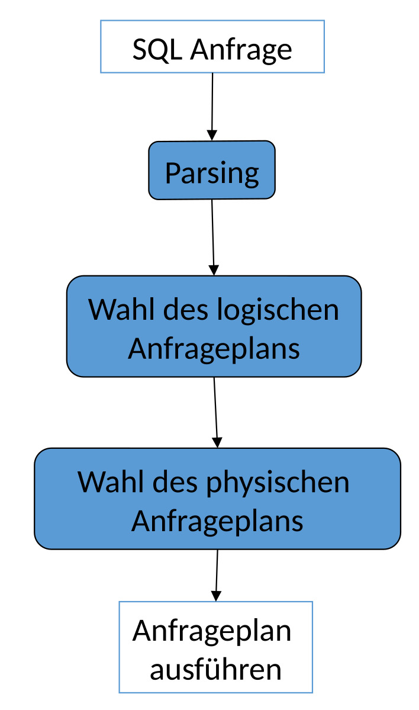
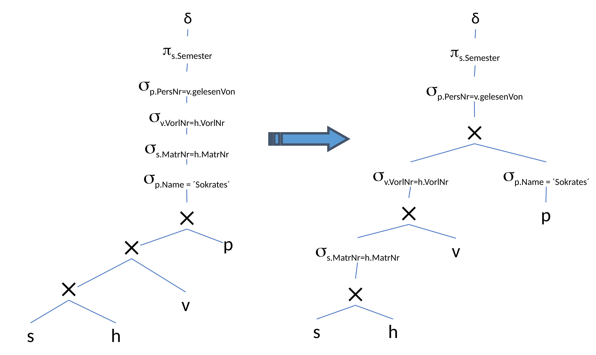
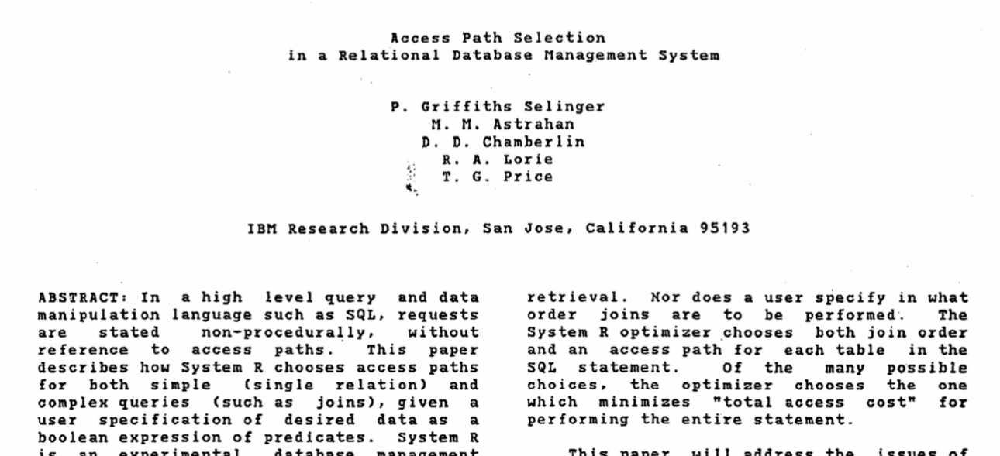

Bearbeitung
Contents
12. Bearbeitung#
-> dieses Thema (‘Bearbeitung’) ist zurzeit in Bearbeitung
Anfragebearbeitung – Grundproblem
Anfragen sind deklarativ. sagen was wir wollen und nicht wie wir unsere Daten extrahieren. Das würde durch beispielsweise ein Programm das wir schreiben geschehen -> Python Programm geht durch CSV-Datei. Stattdessen sagen wir: Gebe mir alle Filme, die im Jahr 1996 produziert werden. Das Datenbanksystem findet von selbst heraus wie es diese Frage beantwortet. Dafür werden die Anfragen in aus…
SQL, Relationale Algebra
Anfragen müssen in ausführbare (prozedurale) Form transformiert werden.
Ziele
Das nennt man „QEP“ – prozeduraler Query Execution Plan
Wichtig hierbei ist, dass die Darstellung/das Programm eff…
Effizienz
Schnell
Wenig Ressourcenverbrauch (CPU, I/O, RAM, Bandbreite)
Das alles wirkt sich auf den Energieverbrauch aus.
Ablauf der Anfragebearbeitung Zunächst haben wir unsere Anfrage: SELECT * FROM x WHERE …;
Parsing
Parsen der Anfrage (Syntax)
Überprüfen der Elemente („Semantik“) -> Semantik wird überprüft
Parsebaum wird erstellt
Vor allem wird hierbei herausgefunden ob diese Anfrage stimmt und auf welche Operationselemente abgebildet wird.Wahl des logischen Anfrageplans -> logischer Anfrageplan wird ausgewählt
Dieser ist in der Regel ein Baum mit logischen Operatoren
Es gibt Potentiell exponentiell viele Pläne, die man anhand der Elemente, die man in der Anfrage hat, erstellen kann. Natürlich lassen sich bestimme Kombis nicht darstellen. Grundproblem ist auch NP-Vollständig.
Wahl des optimalen Plans – Dabei gibt es verschiedene Optimierungsverfahren: Logische Optimierung -> Operatoren werden einfach hin- und hergeschobenRegelbasierter Optimierer Kostenbasierter Optimierer Diese basieren auf den Kosten der jeweiligen Operationen in den Anfragen.
Wahl des physischen Anfrageplans Für jede Operation, die momentan noch in deklarativer Form ist, muss nun eine Prozedur/ein Programm mit physi… ausgewählt werden
Ausführbar
…Programm mit physischen Operatoren – Dies sind unter anderem die Algorithmen, die Scan Operatoren oder auch die JOIN-Implementierungen.
Wahl des optimalen Plans – physische Optimierung

12.1. Parsen der Anfrage#
12.1.1. Syntaxanalyse#
Aufgabe: Umwandlung einer SQL Anfrage in einen Parsebaum.
Atome (Blätter) sind:
Schlüsselworte
Konstanten
Namen (Relationen und Attribute)
Syntaxzeichen
Operatoren
Man kann auch Teilausdrücke zu Kategorien zusammenfassen. Beispielsweise bei einer VIEW.
Syntaktische Kategorien
Namen für Teilausdrücke einer Anfrage
12.1.2. Eine Grammatik für einen Teil von SQL#
Anfragen bestehehn immer aus einer Struktur.
SFW steht für “SELECT FROM WHERE”
:: = <SFW> :: = ( ) Mengenoperatoren fehlen das kann auch eine Menge von Operatoren darstellen.
SFWs werden wie folgt aufgebaut:
::= SELECT FROM WHERE die SelListe (SelectListe) enthält die Attribute, die herausprojeziert werden.
die FromListe enthält die Relationen aus denen wir die Attribute herausholen
eine Bedingung…
Gruppierung, Sortierung etc. fehlen
Listen Es handelt sich hier um Grammatiken. Diese sind formal festgelegt. Es können keine Anfragen formuliert werden, die nicht der Grammatik entsprechen. Dabei ergibt sich eine SelListe aus einem Attribut und einer anderen SelListe bzw. nur aus einem Attribut…
::= , □ ::= Die FromListe ergibt… □ ::= , □ ::=
■ Bedingungen (Beispiele) Verknüpfung/Kombinationen von Bedingungen mit AND □::= AND Eine Bedingung kann auch eine Anfrage sein, bei der man eine Überprüfung in einer anderen Anfrage anfordert. □ ::= IN □ ::= = □ ::= LIKE
■ Die Inhalte von Tupeln …, , , sind nicht durch grammatische Regel definiert. Entweder sie existieren oder sie existieren nicht. Angenommen man wählt eine Relation aus, die nicht existiert, dann wird von der Datenbank zurückgegeben, dass diese es diese Relation nicht gibt. Vollständig z.B. hier: http://docs.openlinksw.com/virtuoso/GRAMMAR.html
12.1.3. Parse-Baum#
In diesem Bild sieht man den Aufbau eines Parsebaums. Dabei besteht die Anfrage aus SFW. Dieses wiederrum kann unterteilt werden in SELECT, <…
Alle Konstanten und Relationsnamen sind in den Blattstrukturen
SELECT Titel
FROM spielt_in, Schauspieler
WHERE SchauspielerName = Name
AND Geburtstag LIKE ‘%1960’;
12.1.4. Prüfung der Semantik#
Während der Übersetzung semantische Korrektheit prüfen
Existieren die Relationen und Sichten der FROM Klausel?
Existieren die Attribute in den genannten Relationen?
Sind sie eindeutig?
Korrekte Typen für Vergleiche? (bsp.: Vergleicht man einen Integer mit einem String usw.
Aggregation korrekt?
…
Am Ende erhält man einen Parsebaum. Dieser wird im nächsten Schritt in einen Operatorbaum umgewandelt. Dargestellt werden kann der Operatorbaum mittels Relationaler Algebra. Dabei entspricht das SELECT einer Projektion und das WHERE einer Selektion. FROM spielt_in, Schauspieler wird hierbei als Kreuzprodukt der beiden Relationen dargestellt. Somit haben wir aus den Schlüsselwörtern konkrete Operatoren bekommen, die nun deutlich besser sichtbar sind. Man weiß nun, dass spielt_in und Schauspieler durch ein Kreuzprodukt kombiniert werden. Diese beiden Relationen sind der Input des Kreuzprodukts. Auf dem Output wird findet dananch eine Selektion statt und auf dessen Output letztendlich wieder eine Projektion.
12.1.5. Vom Parse-Baum zum Operatorbaum#
SELECT Titel
FROM spielt_in, Schauspieler
WHERE SchauspielerName = Name
AND Geburtstag LIKE ‘%1960’;
12.2. Transformationsregeln der RA#
Zuvor haben wir gesehen, dass es für jede Anfrage verschiedene Pläne gibt. Das bedeutet also auch, dass es verschiedene Operatorenbäume gibt. Somit kann man also verschiedene Anfragen ineinander transformieren. Dies wird anhand der Transformationseregeln der Relationalen Algebra dargestellt.
12.2.1. Anfragebearbeitung – Transformationsregeln#
Transformation der internen Darstellung
Ohne Semantik zu verändern Damit ist gemeint, dass die Operatorenbäume nach der Transformation immernoch die gleiche Anfrage wie vor der Transformation beantworten können/ es kommt das selbe Ergebnis bei raus.
Zur effizienteren Ausführung generell ist das Ziel eine effizientere Ausführung zu finden die Operatoren sollen möglichst kleine Zwischenergebnisse liefern, sodass der nächste Operator als Input auch auf möglichst kleinen Mengen von Tupeln arbeiten muss.
Insbesondere: Kleine Zwischenergebnisse
Um diese Transformation zu vollführen, müssen erst einmal äquivalente Ausdrücke identifiziert werden.Äquivalente Ausdrücke
Zwei Ausdrücke der relationalen Algebra heißen äquivalent, falls
Gleiche Operanden (= Relationen)
Stets gleiche Antwortrelation
Stets? bedeutet hierbei, dass es nicht per Zufall die gleichen Ergebnisse bei zwei Anfragen sind. Es müssen immer die gleichen Ergbnisse herauskommen Für jede mögliche Instanz derDatenbank
12.2.2. Anfragebearbeitung – Beispiel#
Beispielsweise wollen wir hier den Nachnamen projezieren. Dafür erstellen wir das Kreuzprodukt zwischen den Relationen ‘mitarbeiter’ und ‘projekte’. Darauf selektieren wir alle Paare bei denen die Mitarbeiter-ID gleich der Projekt-ID sind und zusätzlich sortieren wir die Projekte aus, die ein gleiches oder größeres Budget als 40000 haben.

Nun kann man sich überlegen wo man noch früher Tupel herausfiltern kann. Eine Möglichkeit wäre es die Selektion mit dem Kreuzprodukt zu einem Join zu kombinieren.
Eine weitere Möglichkeit wäre es die übrig gebliebenen Selektion früher durchzuführen. Noch bevor man das Kreuzprodukt der beiden Relationen bildet, kann man die Selektion ‘p.Budget < 40000’ auf der ‘projekt’ Relation ausführen. Nun kann man erwarten, dass der nachfolgende Join auf einer kleineren Tupelmenge ausgeführt wird.

12.2.3. Kommutativität und Assoziativität#
Die Kommutativität und Assoziativität gelten insbesondere für Mengenoperationen.
… ist eine abstrakte Operation
ist kommutativ und assoziativ
R S = S R –> kommutativ
(R S) T = R (S T) –> assoziativ
\(\cup\) ist kommutativ und assoziativ
R \(\cup\) S = S \(\cup\) R
(R \(\cup\) S) \(\cup\) T = R \(\cup\) (S \(\cup\) T)
\(\cap\) ist kommutativ und assoziativ
R \(\cap\) S = S \(\cap\) R
(R \(\cap\) S) \(\cap\) T = R \(\cap\) (S \(\cap\) T)
⋈ ist kommutativ und assoziativ
R ⋈ S = S ⋈ R
(R ⋈ S) ⋈ T = R ⋈ (S ⋈ T)
Bei einem Join kann es passieren, dass die Spaltenreihenfolge anders ist, aber diese kann nachträglich noch geändert werden (bspw. mit einer Projektion).
Gilt jeweils für Mengen und Multimengen
Ausdrücke können in beide Richtungen verwendet
12.2.4. Weitere Regeln#
Selektion Wenn man eine Selektion mit zwei Bedingungen hat, kann man das in zwei Selektionen, die aufeinander aufbauen, kaskadieren.
\(\sigma_{c1 AND c2}(R ) = \sigma_{c1}(\sigma_{c2} (R))\) Wenn man eine Selektion mit einem OR hat kann man davon die Vereinigung bilden. Problem bei Multimengen: c1 or c2 -> damit sagt man, gebe mir jedes Tupel egal ob Bedingung c1, c2 oder beide gelten. Man würde bei der Vereinigung jetzt aber eine andere Anzahl an Tupeln bekommen. Bei den Fällen bei denen beide Bedingungen gelten, würde es das Tupel doppelt geben.
\(\sigma_{c1 OR c2}(R ) = \sigma_{c1}(R) \cup \sigma_{c2} (R)\)
Nicht bei Multimengen
Die äußere Bedigung kann mit der inneren Bedingung vertauscht werden. Dabei kann man überlegen welche Bedingung evenutell günstiger ist zuerst auszuführen.
\(\sigma_{c1}(\sigma_{c2}(R)) = \sigma_{c2}(\sigma_{c1}(R))\) Eine Bedinugung, die auf einen Join ausgeführt wird, kann wie folgt umgeformt werden:
\(\sigma_{c}(R \Phi S) \equiv (\sigma_{c} (R)) \Phi (\sigma_{c} (S))\)
\(\Phi \in \{\cup, \cap , - , ⋈\}\)
\(\sigma_{c}(R \Phi S) \equiv (\sigma_{c} (R)) \Phi S\)
\(\Phi \in \{\cup, \cap , - , ⋈\}\)
Falls sich c nur auf Attribute in R bezieht, kann man es so umformen, dass sich die Selektion nur auf die Relation R bezieht.
Projektion Eine Projektion einer Spalte auf einem Join zweier Relationen kann einer Projektion einer Spalte auf einem Join zweier Projektionen auf jeweils einer Relation entsprechen.\(\pi_{L}(R ⋈ S) = \pi_{L}(\pi_{M}(R) ⋈ \pi_{N}(S))\) Genauso kann nun auch bei einem Join mit Bedingung und einem Kreuzprodukt vorgegangen werden.
\(\pi_{L}(R ⋈_{C} S) = \pi{L}(\pi_{M}(R) ⋈_{C} \pi_{N}(S))\)
\(\pi_{L}(R \times S) = \pi_{L}(\pi_{M}(R) \times \pi_{N}(S))\) Hierbei kann eine Projektion noch vor die Selektion geschoben werden. Wichtig dabei ist, dass die neue Projektion (\(\pi_{M}\)) L enthält. Es können auch weitere Projektionen hinzugefügt werden. Solange sie L enthalten, verändert sich nichts.
\(\pi_{L}(\sigma_{C}(R)) = \pi_{L}(\sigma_{C}(\pi_{M}(R)))\)
12.3. Optimierung#
12.3.1. Anfragebearbeitung - Optimierung#
Regelbasierte Optimierung
Fester Regelsatz schreibt Transformationen gemäß der genannten Regeln vor. Man geht davon aus, dass diese Transformationen die Anfrage schneller bearbeiten. Ein Beispiel ist das ‘pushen’ einer Selektion nach unten im Anfragebaum.
Prioritäten unter den Regeln werden durch Heuristiken bestimmt. Es ist nach Erfahrung der beste Weg, dies muss aber nicht immer der Fall sein.
Kostenbasierte Optimierung
Für jede Relation, die man hat, kann man ein Kostenmodell aufstellen basierend auf Statistiken, die das Datenbankmodell gesammelt hat.
Transformationen um Kosten zu verringern
Dann wird ein optimaler Plan bestimmt, bei dem die Kosten minimal sind. -( Bestimmung der optimalen Joinreihenfolge)
Im Allgemeinen wird nicht die optimale Auswertungsstrategie gesucht, sondern eine einigermaßen effiziente Variante. Sie soll uns dabei helfen den schlimmsten Fall zu verhindern.
Ziel: Avoid the worst case.
12.3.2. Logische und physische Optimierung#
Logische Optimierung
Jeder Ausdruck im Anfragebaum kann in viele verschiedene, semantisch äquivalente Ausdrücke umgeschrieben werden anhand unserer Transformationsregeln.
Wähle den (hoffentlich) besten Ausdruck (=Plan, =QEP -> QueryExecutionPlan)
Physische Optimierung
Für jede relationale Operation gibt es viele verschiedene Implementierungen: wie man zum Beispiel auf Tabellen zugreift. Das kann ein Scan, verschiedene Indizes, ein sortierter Zugriff, etc. sein.
Genauso bei Joins kann man auch verschiedene Implementierungen wie Nested loop, sort-merge, hash, etc. wählen.
Daraus wählt man für jede Operation die (hoffentlich) beste Implementierung aus.
Es kann nun sein, dass die logische von der physischen Optimierung abhängt. (Abhängigkeit beider Probleme!) Nun kann man sagen, dass ein bestimmter Plan besser funktioniert, wenn man einen Nested-Loop-Join durchführt. Also wenn man die eine Schleife innerhalb der anderen hat, kann man in der einen Schleifen bereits etwas anderes mitprüfen. Das würde einem bestimmten logischen Plan besser entsprechen.
12.3.3. Logische Optimierung – regelbasiert#
Grundsätze der logischen Optimierung
Selektionen so weit wie möglich im Baum nach unten schieben.
Selektionen mit AND können aufgeteilt und separat verschoben werden.
Projektionen so weit wie möglich im Baum nach unten schieben,
bzw. neue Projektionen können eingefügt werden. –> Unterschied zwischen dem nach unten Verschieben bei Selektionen und Projektionen: Bei dem Verschieben von Selektionen geht es darum die Menge an Tupeln zu verringern. Bei Projektionen versucht man die Anzahl der Spalten zu verringern. Beides ist sinnvoll, da man davon ausgehen muss, dass bei riesigen Datensätzen eine Spalte unter Anderem mehrere Gigabyte groß sein kann. Wenn man solche Spalten nicht unbedingt mehr mitschleppen muss, macht man das Programm effizienter.
Duplikateliminierung kann manchmal entfernt werden oder verschoben werden.
Kreuzprodukte mit geeigneten Selektionen zu einem Join zusammenfassen. Man möchte möglichst vermeiden Kreuzprodukte durchzuführen, stattdessen kann man eher Joins mit effizienteren Implementierungen durchführen.
Noch nicht hier: Suche nach der optimalen Joinreihenfolge
12.3.4. Anwendung der Transformationsregeln#
Die folgende Anfrage ist von Prof. Alfons Kemper (TU München). Bei der Anfrage suchen wir eindeutig alle Semester in denen für Studenten, hören, Vorlesungen und Professoren folgenden Bedingungen gelten: Der Professor heißt mit Namen Sokrates. Dieser Professor soll Vorlesungen halten und diese sollen von Studierenden gehört werden. Also man möchte wissen: In welchen Semestern sind die Studierenden, die Vorlesungen bei Sokrates hören?
select distinct s.Semester
from Studiernden s, hören h
Vorlesungen v,
Professorinnen p
where p.Name = ´Sokrates´
and v.gelesenVon = p.PersNr
and v.VorlNr = h.VorlNr
and h.MatrNr = s.MatrNr
Zunächst hat man eine Darstellung bei der es ein Kreuzprodukt aller Relationen gibt. Dann kommen die aneinandergereihten Selektionsoperatoren. Man kann direkt merken, dass dies nicht die logisch effizienteste Variante ist.
12.3.5. Aufspalten der Selektionsprädikate#
Das erste was wir machen, ist das Aufspalten der Selektion. Dadurch haben wir alles als einzelne Operation. Nun können wir uns für den nächsten Schritt überlegen, wo es effizienter wäre die Selektionen zu platzieren.

12.3.6. Verschieben der Selektionsprädikate „Pushing Selections“#
Um die Anzahl der Tupel zu verringern schiebt man die Selektionen weiter nach unten.
Um die Anzahl der Studierenden, die eine Vorlesung hören, zu verringern hat man direkt nach dem Kreuzprodukt zwischen den beiden Relationen ‘studierende’ und ‘hören’ die Selektion platziert. Die kleinere Menge an Tupeln als output wird dann wieder wie zuvor über das Kreuzprodukt mit ‘Vorlesungen’ kombiniert. Direkt danach reduziert man mit einer Selektion die Anzahl der Tupel wieder bevor man ein weiteres Kreuzprodukt bildet. Ansonsten haben wir direkt vor die Professorentabelle die Selektion mit der Bedingung, dass der Name des Professors Sokrates sein soll, geschoben. Somit erhalten wir als Ouptut nach der Selektion nur ein Tupel und müssen nicht mehr alle Professorentupel mitführen.

12.3.7. Zusammenfassung von Selektionen und Kreuzprodukten zu Joins#
Nun kann man die Selektionen mit den Kreuzprodukten zusammenfassen und durch effizienter implementierte Joins austauschen.
12.3.8. Optimierung der Joinreihenfolge: Kommutativität und Assoziativität ausnutzen#
Nun wollen wir Kommutativität und Assoziativität ausnutzen, um die Joinreihenfolge zu optimieren. Das bedeutet, wir möchten die Tupelmenge, die wir erzeugen, möglichst gering halten. Wir verschieben daher die Selektion des Professorennames nach ganz unten. Grund hierfür ist, dass wir aus dieser Selektion nur ein Tupel erhalten mit dem wir weiterarbeiten müssen. Danach vergrößert sich die Tupelmenge nur minimal um die Vorlesungen, die der Professor hält, usw. Ohne diese Optimierung starten wir mit der gesamten Menge an Studierenden, die diese Vorlesung hören. Nun muss man diese große Tupelmenge als Input für die nächsten Operationen mitnehmen, was vermeidbare Kosten verursacht.

12.3.9. Was hat´s gebracht?#
Ohne die Optimierungen haben wir ein Maximum von 13 Tupeln mit denen wir arbeiten müssen. Generell arbeiten wir hierbei immer mit einer sehr hohen Anzahl von Tupeln im Gegensatz zu der Variante mit Optimierungen. Durch die Optimierungen arbeiten wir auf maximal 4 Tupeln.
Es handelt sich hier um ein ausgedachtes Beispiel. Die Zahlen sind nicht logisch herleitbar. Es soll nur darstellen, wie sich das Verschieben von günstigen Join-Varianten auf die Tupelmenge, verhält.
12.3.10. Einfügen von Projektionen#
Nun kann man noch darüber nachdenken, ob man Projektionen einfügt, wenn man bestimmte Spalten nicht mehr braucht. Das wäre bei der Matrikelnummer der Fall, denn man benötigt im Nachhinein nur noch diese aus den Attributen beim Join und der Projektion danach. Insbesondere haben wir dort dann einen Left-Join ausgeführt.

12.3.11. SQLite Explain#
Anfragepläne kann man auch in SQLite ausprobieren. Dafür stellt man am Anfang mit ‘.eqp on’ den Modus an. Dann wird für jede Anfrage der Plan direkt gezeigt. Es kann auch explizit mit ‘EXPLAIN QUERY PLAN’ eingestellt werden. Danach gibt man wie gewohnt die SQL-Anfrage ein. Nun kann man die tatsächliche Implementierung sehen. Zunächst wird die ‘producer’ Tabelle gescannt. Es wird dann ein Autoindex für ‘movie’ verwendet, weil wir den Primärschlüssel ‘mid’ verwenden. Dieser Index wird für den IN-OPERATOR verwendet. Außerdem wird ein B-TREE verwendet, um die doppelten Werte zu vermeiden.

12.4. Kostenmodelle#
12.4.1. Kostenbasierte Optimierung#
Konzeptionell: Generiere alle denkbaren Anfrageausführungspläne.
Bewerte deren Kosten anhand eines Kostenmodells
Statistiken und Histogramme
Kalibrierung gemäß verwendeter Rechner
Abhängig vom verfügbaren Speicher
Aufwands-Kostenmodell
Durchsatz-maximierend
Nicht Antwortzeit-minimierend
Achtung: Nicht zu lange optimieren!Führe billigsten Plan aus
12.4.2. Problemgröße (Suchraum)#
Konzeptionell: Generiere alle denkbaren Anfrageausführungspläne
Anzahl Bushy-Pläne mit n Tabellen
\(\frac{(2(n-1))!}{(n-1)!}\)
n |
\(2^n\) |
(2(n-1))!/(n-1)! |
|---|---|---|
2 |
4 |
2 |
5 |
32 |
1680 |
10 |
1024 |
1,76 \(\times 10^{10}\) |
20 |
1.048.576 |
\(4,3\times10^{27}\) |
Plankosten unterscheiden sich um viele Größenordnungen.
Optimierungsproblem ist NP-hart
12.4.3. Kostenmodell#

12.4.4. Statistiken#
Zu jeder Basisrelation
Anzahl der Tupel
Tupelgröße
Zu (jedem) Attribut
Min / Max
Werteverteilung (Histogramm)
Anzahl der distinct Werte
Oft: „Kardinalität“
Zum System
Speichergröße
Bandbreite
I/O Zeiten
CPU Zeiten
Problem: Erstellung und Update der Statistiken
Deshalb meist nur explizit/manuell zu initiieren
runstats()
12.4.5. Kosten von Operationen#
Projektion:
Keine Kosten falls mit anderem Operator kombiniert
Selektion
Ohne Index: Gesamte Relation von Festplatte lesen
Mit Baum-Index (z.B. B-Baum): Teil des Index von Platte lesen (Baumtiefe) und gesuchte Seite von Platte lesen
Bei Pipelining: (Fast) keine Kosten
Join
Je nach Joinalgorithmus
Nested Loops, Hash-Join, Sort-Merge Join, usw.
Sortierung: Nicht hier
Wesentliches Kostenmerkmal: Anzahl der Tupel im Input
Insbesondere: Passt die Relation in den Hauptspeicher?
Selektion, Projektion, Sortierung, Join
Output ist Input des nächsten Operators.
Deshalb: Ein Kostenmodel schätzt u.a. für jede Operation die Anzahl der Ausgabetupel.
„Selektivität“ in Bezug auf Inputgröße
#Ausgabetupel = #Eingabetupel x Selektivität
Auch „Selektivitätsfaktor“ (selectivity factor, sf)
12.4.6. Selektivität#
Selektivität schätzt Anzahl der qualifizierenden Tupel relativ zur Gesamtanzahl der Tupel in der Input Relation.
Projektion:
sf = |R|/|R| = 1
Selektion:
sf = |\(\sigma_c\)®| / |R|
Join:
sf = |R ⋈ S| / |R x S| = |R ⋈ S| / (|R| · |S|)
12.4.6.1. Selektivität schätzen#
Selektion:
Selektion auf einen Schlüssel:
sf = 1 / |R|
Selektion auf einen Attribut A mit m verschiedenen Werten:
sf = (|R| / m) / |R| = 1/m
Dies ist nur geschätzt!
Join
Equijoin zwischen R und S über Fremdschlüssel in S
sf = 1 / |R|
„Beweis“: sf = |R ⋈ S| / (|R x S|) = |S| / (|R| · |S|)
12.4.7. Selinger-style“ Optimization#

12.4.8. Join Selektivität (Selinger Style)#

Beispiel
12.4.9. Modelle zum besseren Schätzen der Selektivität#
Gleichverteilung der Werte
Platzsparend (count, max, min), einfach
Schlechte Abschätzung bei “skew” (ungleiche Verteilung)
Histogramme (Beispiel gleich)
Parametrisierte Größe, einfach
Güte der Abschätzung hängt von Histogrammtyp und -größe ab.
Außerdem: Aktualität garantieren ist aufwändig.
Sampling
Repräsentative Teilmenge der Relation
Parametrisierte Größe, schwierig zu finden
Güte hängt von Samplingmethode und Samplegröße ab
Außerdem: Aktualität
12.4.10. Beispiel zu Histogrammen#
SELECT *
FROM product p, sales S
WHERE p.id=s.p_id and
p.price > 100
Gegeben 3300 products, 1M sales
Gleichverteilung
Preisspanne ist 0-1000 => Selektivität der Bedingung ist 9/10
Erwartet: 9/10*3300 ≈ 3000 Produkte
Histogramm-basiert
Selektivität der Bedingung ist 5/3300 ≈ 0,0015 also 5 Produkte
12.4.11. Kosten – Weitere Komplikationen#
Parallelität / Pipelining
Kosten aller Operatoren können nicht addiert werden.
Hauptspeichergröße
Pufferung und Caching
I/O Kosten (Lesen einer Seite) vs. CPU Kosten
Multiuser: Durchsatz statt Antwortzeit
=> Kostenmodelle sind hochkomplex
12.4.12. Ausblick auf DBS II#
Diverse Algorithmen für einzelne Operatoren
Insbesondere Join und Sortierung
Kostenmodelle/Kostenschätzung genauer
Optimale Joinreihenfolge: Dynamische Programmierung
Physische Anfragepläne / Pipelining

12.5. Multiple Choice#
Die hier verwendete Version des Multiple-Choice-Trainers von EILD.nrw wird nur in das JupyterBook eingebunden und nicht selbst gehostet. Der Multiple-Choice-Trainer wird durch GitHub-Pages gehostet.
Alle Fragen und Kategorien befinden sich zurzeit in Überarbeitung und sind nicht final.